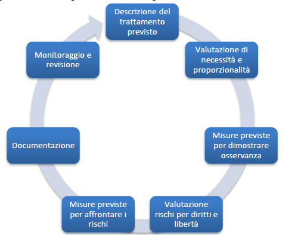

Introduzione
Il trattamento dei dati personali è un tema centrale nell'era digitale. Con l'aumento delle informazioni condivise online, è fondamentale comprendere come vengono raccolti, utilizzati e protetti i nostri dati.
Cos'è il trattamento dei dati
Secondo il GDPR, il trattamento dei dati personali comprende qualsiasi operazione effettuata su dati personali, come la raccolta, la registrazione, la conservazione, la modifica, la consultazione, l'uso e la cancellazione.
Il GDPR
Il Regolamento Generale sulla Protezione dei Dati (GDPR) dell'UE stabilisce regole severe sul trattamento dei dati, imponendo obblighi alle aziende e diritti agli utenti come l'accesso, la rettifica e la cancellazione.
Sicurezza Informatica
La protezione dei dati passa attraverso misure come crittografia, autenticazione a due fattori e backup. Queste azioni impediscono accessi non autorizzati e violazioni di sicurezza.
Esempi Pratici
Un esempio di trattamento dei dati è l'iscrizione a un sito web, dove si inseriscono nome, email e telefono. L'utente deve dare un consenso chiaro, e l'organizzazione deve rispettare la privacy.
Conclusione
È essenziale conoscere i nostri diritti e pretendere il rispetto della nostra privacy. Il trattamento sicuro dei dati è responsabilità sia delle aziende che dei singoli individui.